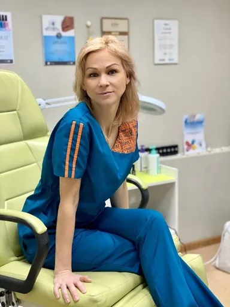
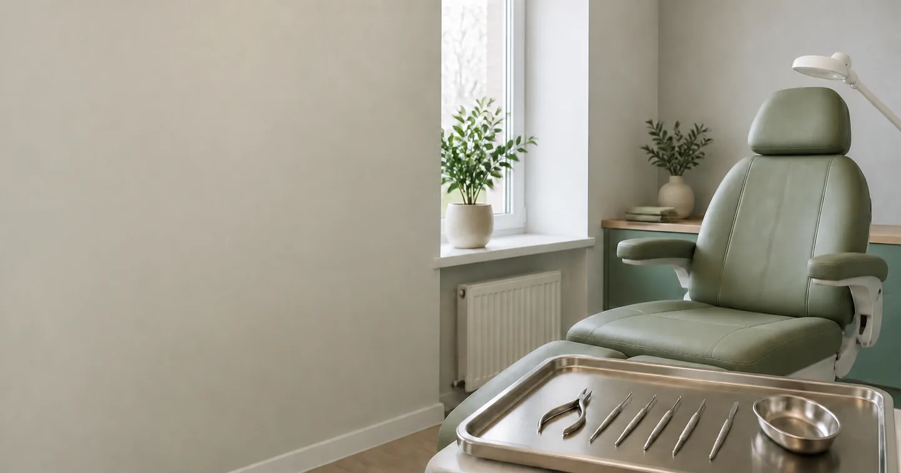

ПРОФЕССИОНАЛЬНЫЙ УХОД ЗА СТОПАМИ
Забота в деталях.
Лёгкость в шаге.
Педикюр и бережный уход за стопами и ногтями.
На приёме у Марии Колесник во Всеволожске.

в профессии
Мария КолесникДипломированный подолог
Медицинское образование
Октябрьский проспект, 90
Для ваших стоп.
Под ваш запрос.
Регулярный уход, обработка ногтей и помощь проблемным участкам. Выберите направление, чтобы посмотреть цены.
Профилактический аппаратный педикюр3 000 ₽
Аппаратная обработка 10 ногтевых пластин + стопы без боли. Удаление огрубевшей кожи, профилактика вросших ногтей. Идеально для регулярного ухода.
Медицинский аппаратный педикюр3 500 ₽
Профессиональная обработка при гиперкератозе, диабетической стопе, псориазе. Безопасно, стерильно, с индивидуальным подбором средств для домашнего ухода.
Классический педикюр2 500 ₽
Обработка стоп бритвенным станком + 10 ногтевых пластин. Техника выполнения в лучших традициях классической школы педикюра.
Комбинированный педикюр3 000 ₽
Сочетание аппарата + классики. Индивидуальный подход к каждой стопе.
Профилактический аппаратный педикюр на здоровые ногти (обработка 10 ногтевых пластин, без стоп)2 000 ₽
Обработка 10 ногтевых пластин, без обработки стоп.
Медицинский аппаратный педикюр при патологии ногтей средней сложности (обработка 10 ногтевых пластин, без стоп)2 500 ₽
Обработка ногтевых пластин с онихомикозом.
Медицинский аппаратный педикюр при патологии ногтей высокой сложности (обработка 10 ногтевых пластин, без стоп)3 000 ₽
Обработка ногтевых пластин с онихомикозом.
Обработка кожи двух стоп (без патологий)1 500 ₽
Для тех, кто ценит быстроту и ухоженный вид.
Обработка кожи с гиперкератозом, трещинами2 000 ₽
Глубокое удаление натоптышей, проработка трещин, псориаз, ДС. Без обработки ногтей.
Удаление одной мозоли900 ₽
Стержневые, плоские, межпальцевые мозоли.
Обработка вросшего ногтя (1 зона)1 000 ₽
Корректируем форму, снимаем воспаление.
Нитиноловая нить (большой палец)3 000 ₽
Коррекция с помощью нитиноловой нити.
Нитиноловая нить (маленький палец)1 500 ₽
Без боли, не влияет на образ жизни.
Не знаете, что выбрать? Опишите свой запрос Марии при записи.

О СПЕЦИАЛИСТЕ
Внимание к вам.
И к каждой детали.
Мария Колесник, дипломированный подолог с медицинским образованием по специальности «Сестринское дело» и опытом в педикюре 24 года.
Индивидуальный подход, гипоаллергенные средства и дружелюбная обстановка. Педикюр для всей семьи.
Трёхэтапная стерилизация
Все инструменты проходят полный цикл обработки.
Время для себя
Приём по предварительной записи. Свободное время подтверждается в переписке.
Расписание приёма
- Понедельник
- 10:00 · 12:00 · 14:00
- Вторник
- 10:00 · 12:00 · 14:00
- Среда
- 10:00 · 12:00 · 14:00
- Суббота
- 08:00 · 10:00 · 12:00 · 14:00 · 16:00 · 18:00 · 20:00
В июле отпуск.
Первый шаг?
Просто напишите.
Обсудим ваш запрос
и выберем время приёма.